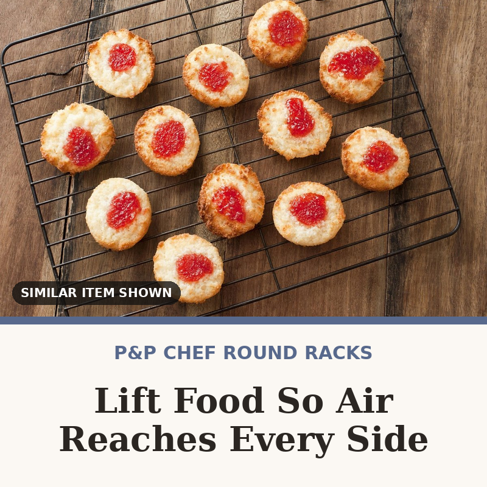

P&P CHEF 7.5-Inch Round Cooking and Cooling Rack, 2-Pack
Food that sits flat on the basket floor can steam in its own juices instead of crisping underneath. These 7.5-inch stainless steel racks raise food 1 inch so air circulates below, and they double as steamer and cooling racks.
Check price on Amazon → Paid link · we may earn a commission